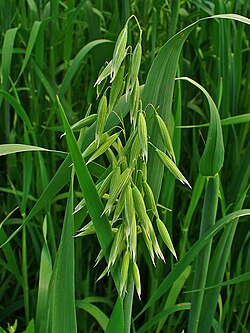

Ayuntamiento de Senés
JARDIN BOTANICO DE ESPECIES AUTOCTONAS DE SENES

Avena sativa

La avena (Avena sativa) es una planta herbácea anual perteneciente a la familia de las gramíneas, ampliamente cultivada en el ámbito mediterráneo y en otras regiones templadas por su valor alimenticio y forrajero. Se caracteriza por su crecimiento rápido y su adaptación a diversos tipos de suelos.
Presenta tallos erectos y flexibles que pueden alcanzar hasta un metro de altura. Sus hojas son largas, estrechas y de color verde, y durante la floración desarrolla inflorescencias en forma de panícula colgante, donde se forman los granos que constituyen su principal aprovechamiento.
La avena es originaria de regiones templadas de Europa y Asia, y actualmente se cultiva en todo el mundo. En el ámbito mediterráneo, es frecuente en campos de cultivo, donde se adapta bien a suelos relativamente pobres y climas suaves.
La avena es un alimento de alto valor nutricional, rica en fibra, proteínas y minerales. Destaca por sus propiedades digestivas y por contribuir a la regulación del colesterol, siendo ampliamente utilizada en la alimentación humana y animal.
La avena simboliza la sencillez y la abundancia, al ser un cultivo tradicional ligado a la alimentación básica y al sustento de las comunidades rurales.
En Senés, la avena ha sido utilizado principalmente como alimento para el ganado. La harina de la avena se utilizaba para combatir el estreñimiento y disminuir el ácido úrico.
La avena florece en primavera, desarrollando sus características panículas que posteriormente darán lugar a los granos.
La avena es una de las gramíneas más valoradas en la alimentación moderna por sus beneficios para la salud. Además, su cultivo contribuye a mejorar la estructura del suelo en sistemas agrícolas.